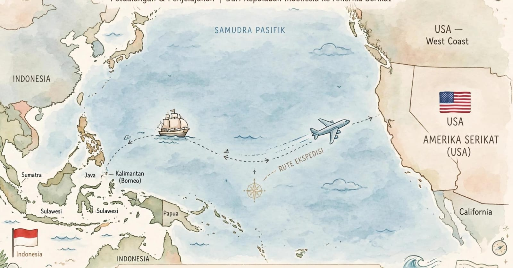

Ekspedisi Indonesia-Amerika: Panduan Kirim Paket ke Amerika Serikat

Mengirim paket dari Indonesia ke Amerika Serikat kini menjadi kebutuhan bagi banyak orang. Ada yang ingin mengirim dokumen kepada keluarga, hadiah untuk kerabat, barang pribadi, hingga produk usaha kepada pelanggan di luar negeri. Karena jarak yang jauh dan adanya aturan kepabeanan, pengiriman internasional perlu dipersiapkan dengan baik.
Sebelum memilih ekspedisi Indonesia-Amerika, ada beberapa hal yang perlu diperhatikan, mulai dari jenis barang, berat dan ukuran paket, alamat penerima, dokumen pengiriman, hingga perkiraan biaya dan waktu perjalanan. Persiapan yang tepat dapat membantu mengurangi risiko keterlambatan atau masalah saat paket diperiksa.
📦 Ingin Mengirim Paket ke Amerika?
Konsultasikan kebutuhan pengiriman internasional Anda kepada Lion Parcel Bandung POS101. Tanyakan pilihan layanan, tujuan yang tersedia, persyaratan barang, dan estimasi biaya sebelum mengirim.
💬 Chat WhatsApp 0851-8309-04861. Apakah Bisa Mengirim Paket dari Indonesia ke Amerika?
Pengiriman paket dari Indonesia ke Amerika Serikat dapat dilakukan melalui layanan pengiriman internasional yang melayani rute tersebut. Namun, ketersediaan layanan, jenis barang yang diterima, berat maksimum, serta pilihan pengiriman dapat berbeda antara satu penyedia jasa dan penyedia lainnya.
Karena itu, jangan langsung berasumsi bahwa semua ekspedisi domestik menyediakan layanan ke Amerika Serikat. Sebaiknya tanyakan terlebih dahulu apakah tersedia layanan untuk alamat tujuan Anda, berapa estimasi biayanya, dan apakah barang yang akan dikirim memenuhi ketentuan.
Bagi masyarakat Bandung, Rancaekek, Cicalengka, dan sekitarnya, konsultasi awal dapat membantu menentukan opsi pengiriman yang sesuai. Lion Parcel Bandung POS101 dapat dihubungi untuk menanyakan ketersediaan pilihan layanan internasional dan prosedur pengiriman yang berlaku.
2. Barang Apa Saja yang Bisa Dikirim ke Amerika?
Jenis barang yang dapat dikirim bergantung pada ketentuan penyedia jasa, peraturan Indonesia, serta aturan impor Amerika Serikat. Beberapa kategori barang yang biasanya ditanyakan oleh calon pengirim antara lain:
- Dokumen: surat, berkas bisnis, dan dokumen nonrahasia yang memenuhi ketentuan pengiriman.
- Pakaian dan aksesori: baju, kain, atau aksesori fesyen yang tidak termasuk barang terlarang.
- Produk UMKM: kerajinan, aksesori, dan produk lain yang memenuhi persyaratan ekspor serta impor.
- Barang pribadi atau hadiah: barang untuk keluarga maupun teman, dengan isi dan nilai yang dinyatakan secara benar.
- Sampel produk: sampel usaha yang diperbolehkan dan disertai dokumen sesuai kebutuhan.
Daftar tersebut bukan jaminan bahwa setiap barang dapat dikirim. Produk makanan, kosmetik, obat-obatan, suplemen, baterai, barang bermerek tertentu, dan produk yang berasal dari tumbuhan atau hewan bisa memiliki persyaratan tambahan atau pembatasan khusus.
Sebelum mengemas barang, sampaikan jenis dan komposisi barang secara jelas kepada penyedia jasa. Untuk barang yang memerlukan izin atau dokumen khusus, pastikan seluruh persyaratannya dipenuhi terlebih dahulu.
3. Berapa Biaya Ekspedisi Indonesia-Amerika?
Biaya pengiriman dari Indonesia ke Amerika Serikat tidak selalu sama. Tarif bergantung pada sejumlah faktor, sehingga sebaiknya meminta penawaran berdasarkan detail paket yang sebenarnya.
- Berat aktual: berat paket setelah dikemas.
- Dimensi paket: panjang, lebar, dan tinggi dapat memengaruhi berat volumetrik.
- Alamat tujuan: kota atau kode ZIP penerima di Amerika Serikat.
- Jenis layanan: pilihan layanan dan estimasi kecepatan pengiriman yang tersedia.
- Jenis barang: karakteristik barang dapat menentukan persyaratan penanganan.
- Biaya tambahan: biaya penanganan khusus, bea masuk, pajak, atau pungutan lain jika berlaku.
Berat volumetrik adalah perhitungan berdasarkan ukuran paket. Oleh karena itu, paket besar tetapi ringan belum tentu dikenai biaya berdasarkan berat aktual saja. Rumus dan pembagi yang digunakan mengikuti ketentuan penyedia jasa.
Tips sebelum meminta ongkir
Siapkan berat paket, ukuran panjang × lebar × tinggi, deskripsi isi, nilai barang, serta kota dan kode ZIP penerima. Informasi ini membantu penyedia jasa memberikan estimasi yang lebih relevan.
4. Berapa Lama Pengiriman Paket ke Amerika?
Lama pengiriman internasional dipengaruhi oleh layanan yang dipilih, jadwal penerbangan, proses sortir, pemeriksaan kepabeanan, lokasi penerima, serta kondisi operasional. Karena itu, tidak ada satu estimasi waktu yang berlaku untuk semua paket.
Jika paket dibutuhkan untuk acara tertentu, hadiah ulang tahun, keperluan bisnis, atau tenggat pekerjaan, sebaiknya rencanakan pengiriman lebih awal. Mintalah estimasi waktu berdasarkan layanan yang benar-benar tersedia dan tanyakan apakah estimasi tersebut dihitung sejak paket diterima, diberangkatkan, atau diproses oleh jaringan pengiriman.
Perlu diingat bahwa estimasi waktu bukan selalu jaminan tanggal tiba. Pemeriksaan bea cukai, dokumen yang belum lengkap, atau pembatasan barang dapat memengaruhi perjalanan paket.
5. Dokumen Apa yang Perlu Disiapkan?
Persyaratan dokumen bergantung pada jenis barang, nilai kiriman, tujuan, dan layanan yang digunakan. Untuk pengiriman barang dagangan atau produk usaha, dokumen yang diperlukan dapat berbeda dari pengiriman hadiah pribadi.
Informasi yang umumnya perlu disiapkan meliputi:
- Nama lengkap, alamat, nomor telepon, dan kode ZIP penerima.
- Nama serta alamat lengkap pengirim di Indonesia.
- Deskripsi isi paket yang jelas dan tidak menyesatkan.
- Jumlah dan nilai barang yang sebenarnya.
- Commercial invoice atau dokumen pendukung lain jika diwajibkan untuk jenis kiriman tersebut.
- Dokumen izin, sertifikat, atau keterangan tambahan jika barang termasuk kategori yang diatur.
Jangan mencantumkan nilai barang yang tidak sesuai atau menggunakan deskripsi terlalu umum seperti hanya menulis “barang” atau “hadiah” apabila formulir meminta rincian isi. Informasi yang akurat membantu proses pemeriksaan dan mengurangi risiko permintaan klarifikasi.
6. Apakah Paket ke Amerika Bisa Dikenai Bea Masuk dan Pajak?
Ya, kiriman yang masuk ke Amerika Serikat dapat dikenai bea masuk, pajak, atau pungutan lain sesuai peraturan yang berlaku. Perlakuannya dapat bergantung pada jenis barang, negara asal, nilai kiriman, tujuan penggunaan, dan ketentuan impor yang berlaku pada saat barang tiba.
Jangan berasumsi bahwa paket bernilai kecil, hadiah keluarga, atau barang pribadi otomatis bebas dari seluruh pungutan. Ketentuan impor dapat berubah, sehingga status dan kewajiban untuk kiriman tertentu perlu diperiksa sebelum dikirim.
Tanyakan kepada penyedia jasa siapa yang bertanggung jawab atas pembayaran pungutan di negara tujuan, bagaimana penerima diberi tahu jika ada tagihan, dan apakah terdapat biaya administrasi tambahan. Dengan begitu, pengirim dan penerima bisa mempersiapkan anggaran sejak awal.
7. Cara Mengemas Paket agar Aman untuk Perjalanan Jauh
Paket internasional dapat melewati beberapa fasilitas sortir dan proses pemindahan. Pengemasan yang baik membantu melindungi barang selama perjalanan, meskipun tidak menghilangkan seluruh risiko kerusakan.
- Gunakan kardus yang kuat dan sesuai ukuran barang.
- Tambahkan bahan pelindung seperti bubble wrap atau bantalan untuk barang yang mudah pecah.
- Isi ruang kosong agar barang tidak mudah bergeser di dalam kemasan.
- Gunakan perekat yang kuat pada seluruh sisi pembukaan kardus.
- Pastikan label alamat lengkap, jelas, dan tidak tertutup perekat atau lipatan.
- Foto barang dan kondisi kemasan sebelum diserahkan kepada penyedia jasa.
- Periksa ketentuan kemasan khusus untuk barang yang membutuhkan penanganan tertentu.
Hindari mencampurkan barang yang tidak diperbolehkan dalam satu paket. Jika mengirim beberapa jenis produk, jelaskan semua isinya saat berkonsultasi agar penyedia jasa dapat memeriksa persyaratan masing-masing barang.
8. Panduan untuk UMKM Indonesia yang Ingin Mengirim Produk ke Amerika
Amerika Serikat merupakan salah satu pasar yang dipertimbangkan oleh pelaku usaha Indonesia untuk menjangkau pembeli internasional. Produk kerajinan, pakaian, aksesori, dan berbagai barang buatan lokal dapat memiliki peluang pasar, tetapi pengiriman lintas negara membutuhkan persiapan lebih dari sekadar membungkus dan mengirim paket.
Sebelum menerima pesanan dari pembeli di Amerika, pelaku UMKM sebaiknya memperhatikan beberapa hal berikut:
- Hitung biaya secara menyeluruh: masukkan ongkir, kemasan, biaya administrasi, dan kemungkinan pungutan impor sesuai kesepakatan transaksi.
- Periksa aturan produk: pastikan barang memenuhi ketentuan ekspor Indonesia dan impor Amerika Serikat.
- Berikan informasi yang jujur: jelaskan bahan, jumlah, nilai, dan fungsi produk dengan benar.
- Diskusikan tanggung jawab biaya: pastikan pembeli memahami siapa yang membayar pungutan di negara tujuan.
- Simpan bukti pengiriman: simpan resi, invoice, bukti transaksi, dan komunikasi dengan pembeli.
- Periksa pilihan pelacakan: tanyakan apakah tersedia nomor pelacakan dan bagaimana proses penanganan jika terjadi kendala.
Untuk penjualan rutin, jangan hanya membandingkan harga kirim. Pertimbangkan juga kejelasan persyaratan, layanan pelacakan, proses klaim, serta dukungan ketika paket tertahan atau memerlukan dokumen tambahan.
9. Bagaimana Cara Memulai Pengiriman dari Bandung ke Amerika?
Jika Anda berada di Bandung, Rancaekek, Cicalengka, atau daerah sekitarnya, langkah awal yang praktis adalah menyiapkan informasi paket dan menghubungi penyedia jasa untuk memeriksa opsi pengiriman internasional.
- Tentukan jenis barang yang akan dikirim.
- Ukur berat dan dimensi paket setelah memperkirakan kemasan.
- Siapkan alamat penerima lengkap, termasuk kota, negara bagian, dan kode ZIP Amerika Serikat.
- Tanyakan apakah tujuan dan jenis barang tersebut dapat dilayani.
- Minta informasi tarif, estimasi waktu, dokumen, ketentuan barang, serta kemungkinan biaya tambahan.
- Pastikan semua persyaratan terpenuhi sebelum menyerahkan paket.
Lion Parcel Bandung POS101 dapat menjadi tempat konsultasi awal untuk menanyakan ketersediaan opsi layanan. Konfirmasi terlebih dahulu apakah rute Amerika Serikat, jenis barang, dan kebutuhan pengiriman Anda dapat dilayani. Jangan mengirim barang sebelum memperoleh kepastian mengenai layanan dan persyaratannya.
📍 Lokasi Lion Parcel Bandung POS101 Nanjungmekar
Jl. Raya Barat Cicalengka RT 1 RW 1, Nanjung Mekar, Rancaekek, Kabupaten Bandung, Jawa Barat.
💬 Konsultasikan Rencana Pengiriman Anda
Sudah mengetahui berat, ukuran, isi paket, dan alamat penerima? Hubungi Lion Parcel Bandung POS101 untuk menanyakan pilihan layanan internasional yang tersedia dan persyaratannya.
📲 Hubungi WhatsApp POS101Kesimpulan
Ekspedisi Indonesia-Amerika memerlukan persiapan yang matang, terutama dalam menentukan layanan, menghitung biaya, menyiapkan dokumen, memeriksa aturan barang, dan memastikan alamat penerima benar. Biaya serta estimasi waktu pengiriman dapat berbeda berdasarkan karakteristik paket dan layanan yang tersedia.
Bagi pengirim dari Bandung dan sekitarnya, langkah terbaik adalah menyiapkan informasi paket terlebih dahulu, kemudian meminta konfirmasi layanan dan persyaratan sebelum melakukan pengiriman. Dengan perencanaan yang baik, proses pengiriman dokumen, barang pribadi, maupun produk usaha ke Amerika Serikat dapat dipersiapkan dengan lebih terarah.
Nama Agen: Lion Parcel Bandung POS101 Nanjungmekar Rancaekek
Jam Operasional: Senin–Minggu, 08.00–20.00 WIB
Alamat: Jl. Raya Barat Cicalengka RT 1 RW 1, Nanjung Mekar, Rancaekek, Kabupaten Bandung
WhatsApp: 0851-8309-0486